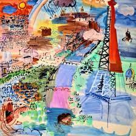
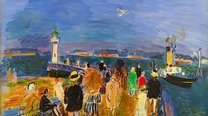
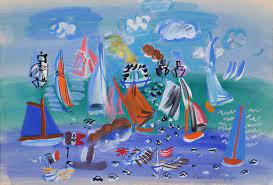
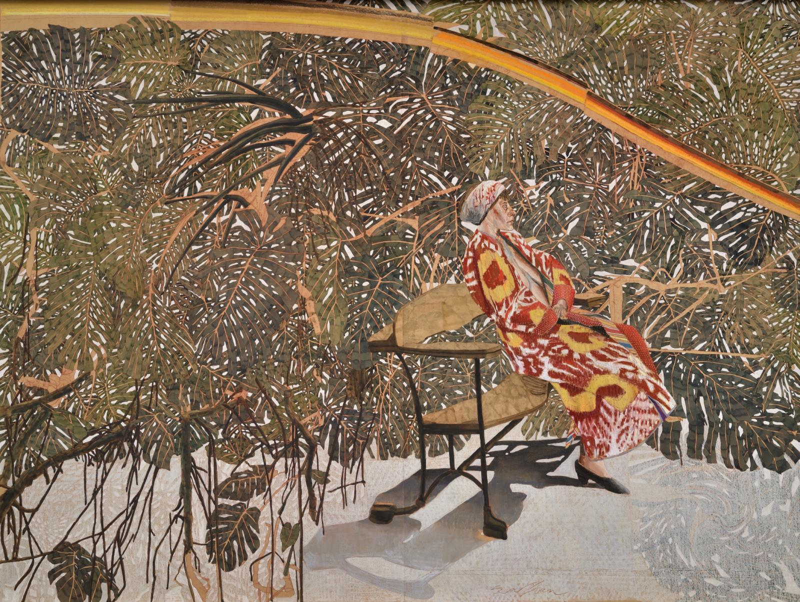
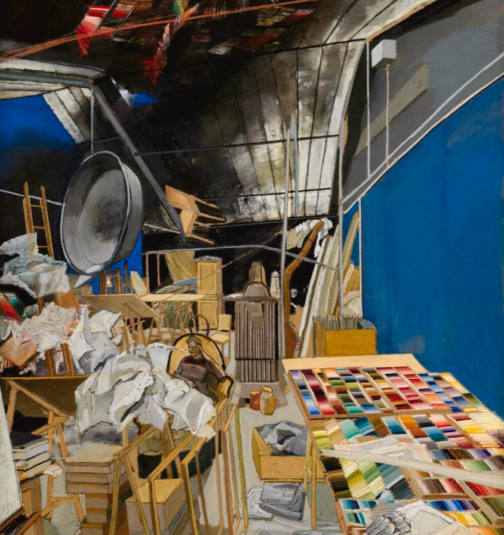
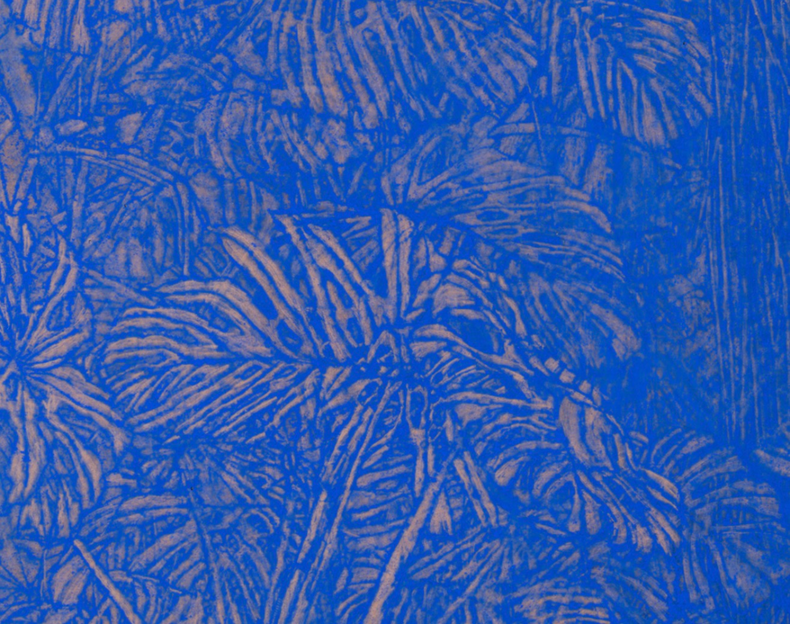

Voilà une présentation de quelques-uns des artistes que j'apprécie tout particulièrement. Il n'y a pas vraiment de logique, je poste tout ce qui me passe par la tête.
Erika Stearly
Résidente de Pennsylvanie depuis toujours, l'artiste Erika Stearly réalise des peintures des espaces où vivent les gens. Ses peintures, à la fois fictives et biographiques, ont récemment été incluses dans des expositions sur invitation à Philadelphie, Los Angeles et Dallas, TX et ont été présentées dans une exposition personnelle à la Boxheart Gallery de Pittsburgh au début de 2019. Mme Stearly a reçu de nombreux prix pour soutenir son travail, notamment des bourses d'artistes de la Puffin Foundation, de la Black Rock Arts Foundation et de l'Indiana University of Pennsylvania, où elle a obtenu son MFA en 2014. Elle a été artiste émergente en résidence en 2015 à la Penn State University, où elle a enseigné la peinture, et a été professeure invitée en 2018 à la Kutztown University.


Raoul Dufy
Raoul Dufy est un peintre et décorateur français de la première moitié du XXe siècle. Il naît au Havre (Seine-Maritime) le 3 juin 1877, et meurt à Forcalquier (Alpes-de-Haute-Provence) le 23 mars 1953. Comme beaucoup d'artistes de cette période appelée "art moderne", il diversifie ses activités en illustrant des textes et en créant des tissus et des décors de théâtre. Le style de Raoul Dufy exprime généralement le spectacle festif du quotidien. Parmi les grandes oeuvres de ce maître de la sensualité, on retient "La fée électricité", une vaste fresque constituée de 250 panneaux, commandée par la Compagnie parisienne d'électricité (1937). Raoul Dufy est issu d'une famille populaire du Havre, où son père, comptable et organiste, initie ses neuf enfants à diverses sensibilités artistiques. À partir de 14 ans, il commence à pratiquer la peinture à l'École municipale des beaux-arts, sous la direction de Charles Lhuillier. L'adolescent expose dès sa 15e année, et ne cessera de participer à des expositions prestigieuses, à Paris (Musée d'art moderne) et à l'international, comme Bruxelles, Copenhague, Genève, Prague, Londres, Chicago, New York. D'abord influencé par des impressionnistes et post-impressionnistes comme Monet, Pissarro et surtout Chagall, Raoul Dufy se passionne pour l'oeuvre de Matisse, et s'essaie au fauvisme. À partir de 1911, il collabore avec de grands couturiers, comme Paul Poiret, et contribue à la décoration théâtrale à partir de 1918 grâce à l'amitié qui le lie à Jean Cocteau, lequel lui consacre d'ailleurs un ouvrage en 1948. À l'âge de 60 ans, Raoul Dufy commence à souffrir de polyarthrite rhumatoïde, une maladie invalidante qui le pousse peu à peu à vivre dans le Midi de la France, pour son climat doux et sec.
- 
- 
- 
Sam Szafran
Sam Szafran, pseudonyme de Samuel Berger est un artiste français. Il vit et travaille à Malakoff. Fils aîné de parents émigrés Juifs polonais, il passe les premières années de son enfance dans le quartier des Halles à Paris. Pendant la Seconde Guerre mondiale, il échappe à la rafle du Vélodrome d’Hiver et se cache dans un premier temps chez des paysans dans le Loiret, puis à Espalion, Aveyron, dans une famille de républicains espagnols. À l'âge de dix ans, il est brièvement interné au camp de Drancy d’où il sera libéré par les Américains. Alors que son père et une grande partie de sa famille ont été massacrés dans les camps nazis, il est envoyé en 1944 par la Croix-Rouge à Winterthur en Suisse, où il est accueilli par la famille Halberstadt. En 1947, il part avec sa mère et sa sœur à Melbourne en Australie, chez un oncle. À son retour en France en 1951, totalement autodidacte, il suit quelques cours du soir de dessin dans les écoles de la Ville de Paris et mène une existence particulièrement rude et précaire. Il épouse en 1963 Lilette Keller. Depuis les années 60 il développe une œuvre très intérieure autour de trois thèmes, les ateliers, les escaliers et les plantes.
- 
- 
- 
Les musées que je recommande